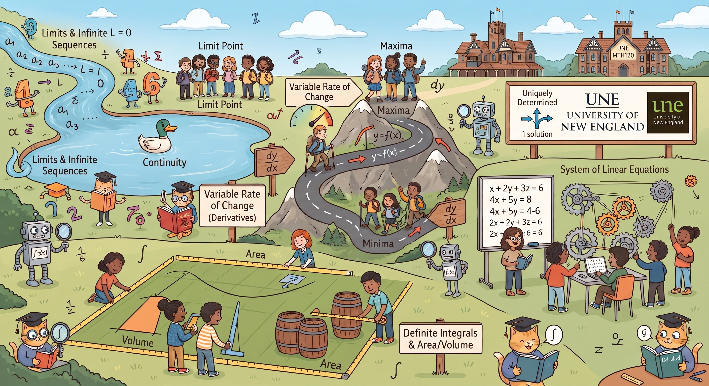

Synchronized visual companion combining historical portraits, course diagrams, and animated SVG proofs.

Press play on the audio track or click any cue card below to begin the synchronized walkthrough.